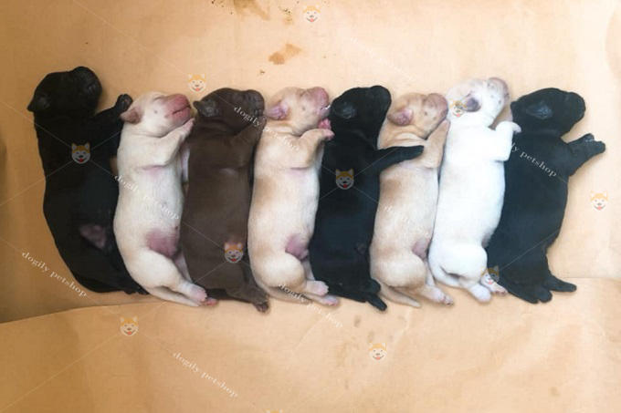
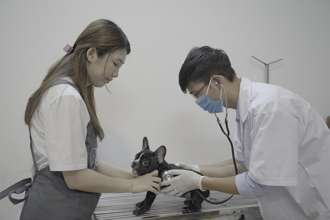

Bệnh viện thú y Dogily Vet hoạt động 24/7 trực thuộc Công ty Cổ phần Dogily Việt Nam. Đây là hệ thống phòng khám, bệnh viện thú y có trang thiết bị hiện đại, với đội ngũ các bác sĩ thú y hàng đầu trọng lĩnh vực thú y hiện nay.
Bệnh viện thú y Dogily Vet hoạt động 24/7 trực thuộc Công ty Cổ phần Dogily Việt Nam. Đây là hệ thống phòng khám, bệnh viện thú y có trang thiết bị hiện đại, với đội ngũ các bác sĩ thú y hàng đầu trọng lĩnh vực thú y hiện nay.
Giá trị cốt lõi của Bệnh viện thú y Dogily Vet: Pets are Family, thú cưng là gia đình. Chính vì vậy, chúng tôi luôn nỗ lực để chăm sóc thật tốt thú cưng của khách hàng. Đến với Dogily Vet, thú cưng của bạn sẽ được chăm sóc trọn đời từ tiêm phòng khi còn nhỏ. Cho đến lúc trưởng thành, sinh sản, phòng và điều trị bệnh khi về già.
|  |
Các bệnh ở chó kiểng và cách điều trịChó có rất nhiều bệnh, nhiều nhất là các bệnh ngoài da, kế đó là [..] |
Bệnh bên trong ở chó và cách chăm sóc, điều trịTừ “chăm sóc" dùng trong chương này hợp lý hơn từ "chữa trị", bởi vì [...] |
|
|  |
Cấp cứu cho chóJohn Steinbeck, tác giả đã từng đoạt giải Nôben khi viết quyển “Những cuộc du [...] |